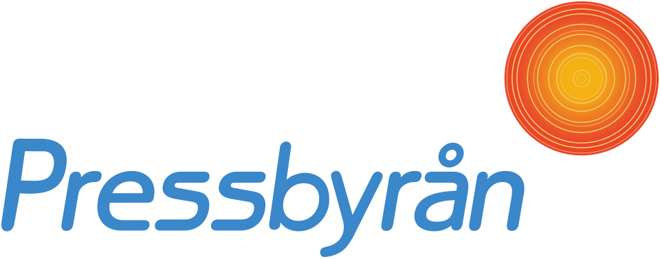

홈 > 브랜드 매거진 > 세븐일레븐
세븐일레븐
세븐일레븐(코리아세븐)은 롯데 계열이 운영하는 편의점으로, 1989년 한국 최초의 편의점으로 문을 열었다.
산업 분야 리테일·커머스 · 공개 등급 자료 기반 · 브랜드 평가 4.2 ★
한눈에 보는 브랜드
세븐일레븐은 1989년 서울 올림픽선수기자촌 상가에 첫 점포를 열며 출발한 대한민국 1세대 편의점 브랜드다. 운영사는 롯데그룹 계열 코리아세븐으로, 1994년 롯데의 코리아세븐 인수와 2000년 로손 점포의 세븐일레븐 전환을 거치며 전국 체인으로 성장했다.
이후 2022년 한국미니스톱 인수로 점포망을 크게 키웠으나, 최근에는 외형 확장보다 적자 점포 정리를 통한 수익성 회복으로 전략 축을 옮기고 있다.
브랜드 관점
가장 큰 화두는 점유율 정체와 양강과의 격차다. GS25와 CU가 각각 30%대 점유율로 빅2 체제를 굳힌 반면 세븐일레븐은 2022년 27%에서 2024년 22%로 밀렸다.
본부임차 비중이 높은 비용 구조와 히트 상품 부족이 약점으로 지목된다. 미니스톱 인수는 단숨에 3강 구도를 만들 카드였지만, 통합 과정에서 중복·부진 점포를 정리하면서 점포 수는 오히려 2022년 약 1만4300개에서 2024년 1만2152개로 줄어 인수 효과가 희석됐다.
이에 회사는 무리한 출점 대신 적자 점포 폐점과 미래형 매장 전환으로 방향을 틀었고, 2025년 1~3분기 영업손실을 전년 동기 대비 약 98% 줄이며 흑자 전환 가능성을 키웠다. 시장 자체가 포화·성숙기에 들어 합산 점포 수가 사상 처음 감소한 한국적 맥락에서, 양적 경쟁을 접고 질적 차별화로 승부하려는 시도라는 점에 함의가 있다.
시작과 성장
1980년대 한국은 슈퍼마켓 중심 소매 환경에서 24시간 근거리 소매 모델이 부재했고, 롯데는 일찍이 CVS 사업에 주목해 1982년 신당동에 국내 첫 편의점 격인 롯데세븐을 선보였다. 본격적 출발점은 1988년 설립된 코리아세븐이 미국 사우스랜드와 기술제휴를 맺고 1989년 5월 서울 송파구 올림픽선수기자촌 상가에 세븐일레븐 1호점을 연 시점이다.
두 번째 전환점은 1994년으로, 롯데가 코리아세븐을 인수해 기존 점포 간판을 세븐일레븐으로 통일하며 그룹 유통 포트폴리오에 편입했다. 이어 1999년 코리아세븐이 별도 법인으로 재설립되고 2000년 로손 점포를 세븐일레븐으로 흡수하면서 단일 브랜드 체계를 완성했다.
이후 바이더웨이 등을 흡수하며 외형을 키웠고, 2022년 한국미니스톱 인수와 2024년 3월 브랜드 통합 완료로 전국 1만 점포대 체인으로 확장했다.
브랜드 아이덴티티
세븐일레븐은 세계 최초의 편의점에서 유래한 브랜드로, 오렌지·레드·그린 3색 띠와 숫자 7에 영문이 결합된 로고가 핵심 비주얼 자산이다. 마지막 철자만 소문자로 처리해 전체를 대문자로 쓸 때보다 부드러운 인상을 주는 디테일은 글로벌 공통의 식별 요소로 자리 잡았다.
한국에서는 24시간 근거리 편의와 신뢰를 바탕으로 청년, 1인 가구, 맞벌이 가구의 일상 인프라를 지향하며, 최근에는 미래형 플랫폼 뉴웨이브를 통해 밝고 젊은 감성의 매장 경험과 푸드 중심 MD로 브랜드 톤을 현대적으로 재정의하고 있다. 보이스는 실용적이면서도 트렌드를 빠르게 흡수하는 생활 밀착형 어조에 가깝다.
제품과 서비스
상품 축은 2008년 출범한 PB 세븐셀렉트를 중심으로 원두커피 세븐카페, HMR 브랜드 소반, 도시락 통합 브랜드 한끼연구소 등으로 다층화돼 있다. 해외 인기 상품을 국내 독점으로 들여오는 글로벌 직소싱은 약 190여 종에 이르고, 유명 IP 협업 상품도 차별화 수단으로 쓰인다.
채널 측면에서는 먹거리 특화 매장 푸드드림, 패션·뷰티를 강화한 뉴웨이브 오리진 등 특화 점포와 HMR 배달 서비스를 확대해 매장 형태와 구매 경로를 다변화하고 있다.
현재 상태
운영사는 롯데그룹 계열 코리아세븐(세븐일레븐)이며 대표는 김홍철이다. 점포 수는 2024년 말 약 1만2152개, 2025년 4월 기준 약 1만1904개로 집계된다.
매출은 2023년 약 5조6592억원에서 2024년 약 5조2975억원으로 감소했고, 영업손실은 2024년 약 844억원이었으나 2025년 1~3분기 누적 약 16억원으로 크게 축소됐다. 시장 점유율은 2024년 기준 약 22% 수준이다.
본사 소재지 등 추가 세부 정보는 미공개.
타임라인
정리된 연도형 이벤트가 없습니다.
BI/CI 변천사
확인된 BI/CI 이미지가 아직 없습니다.
함께 읽을 브랜드
CU(씨유)는 BGF리테일이 운영하는 한국 1위 편의점 체인으로, 2012년 패밀리마트에서 독자 브랜드로 전환했다.
 리테일·커머스 · 자료 기반GS25
리테일·커머스 · 자료 기반GS25GS25는 GS리테일이 운영하는 한국 선두권 편의점 체인으로, 1990년 LG25로 출발해 2005년 GS25로 바뀌었다.
그라자(Graza)는 미국의 D2C 올리브오일 브랜드로, 2022년 1월 출시 이후 밝은 녹색의 짜는 스퀴즈 보틀과 단일산지 스페인 올리브오일로 빠르게 성장한 식품...
 리테일·커머스 · 자료 기반롯데백화점
리테일·커머스 · 자료 기반롯데백화점롯데백화점은 롯데쇼핑이 운영하는 대한민국의 대표 백화점 브랜드다. 1979년 서울 소공동 본점을 열었으며 국내 백화점 업계 1위로 최다 점포망을 갖췄다.

리테일·커머스 · 자료 기반Pressbyrån프레스뷔론(Pressbyrån)은 1899년 신문 판매에서 출발한 스웨덴의 편의점 체인이다. 노르웨이계 라이탄(Reitan) 그룹 산하로, 역·도심의 소형 편의점·키...
 리테일·커머스 · 자료 기반롯데마트
리테일·커머스 · 자료 기반롯데마트롯데마트(Lotte Mart)는 롯데쇼핑이 운영하는 대형마트 체인으로, 1998년 서울에 1호점을 열었다.
리테일·커머스 · 자료 기반이마트24이마트24(emart24)는 신세계그룹이 운영하는 한국의 편의점 프랜차이즈다.
 리테일·커머스 · 자료 기반Extra
리테일·커머스 · 자료 기반Extra엑스트라(Extra)는 1996년 독일에서 메트로(Metro) 그룹 산하로 신설된 슈퍼마켓 체인이었다. 2008년 레베(Rewe) 그룹에 매각되며 브랜드가 사라졌다.